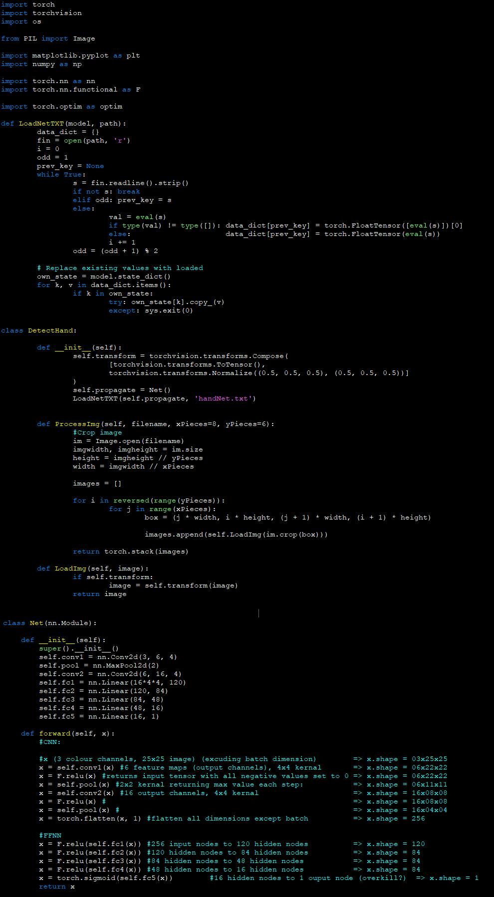

Hand Trainer
This was the first time I had used Google Colab to create code.
I used it because it provided GPUs which would make training the AI much quicker than on my laptop.
This was also the first time I had used pyTorch, so my code is mostly copied from tutorials like this one,
and modified to suit my needs.
For instance, I needed to create a custom dataloader for the dataset I had created; I needed to save the model in TXT format so pyTorch on my rPI4 could open it; I needed to
modify the network architecture to work with my custom dataset; and I wanted
to modify print messages and this line of code:
img = (img + 1) / 2 # unnormalize the funky way... for some reason. ( ＾v＾)
After training, I tested my model on the test data, and it, much to my delight, correctly classified 115 images of 124: it was 92.74% accurate.

However, the test data was taken in similar lighting conditions to the training data, so in practice it is accurate enough, but not this accurate... I should proabably quantify this,
but it would take too long for what it's worth.

Click here to open the online Colab file.
Hand Detection
Now the AI was trained, I needed to make it run along with the UI and camera for my AR headset.
To do this, I coded a "DetectHand" class which handled loading of the network; the splitting of the 200x150 image into 48 25x25 images;
and the subsequent transforming and feeding of the images into the network for classification.
Click the code below to download the python file:

<
Contents:
Click to jump to chapter: